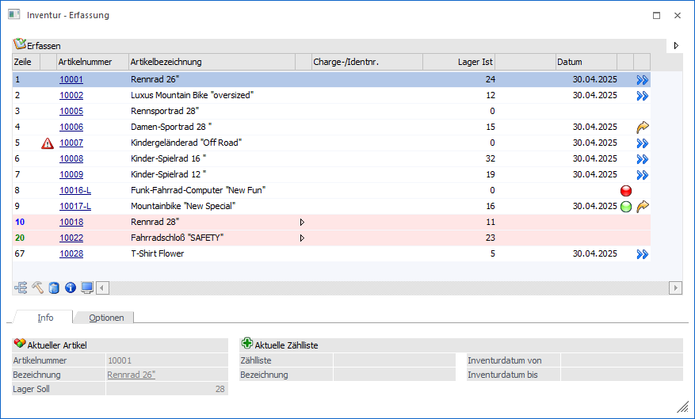

Durch Anwahl des Buttons "Ok" bzw. der Taste F5 im Register Eingabe des Programms Inventur wird das Fenster "Inventur - Erfassung" geöffnet. An dieser Stelle können die Inventurerfassungen getätigt werden.

Bei der Inventurerfassung wird zwischen den folgenden Erfassungsvarianten unterschieden, welche in den nachfolgenden Kapiteln detailliert erläutert werden:
ü Einzelerfassung
Bei der
Einzelerfassung wird in der Erfassungstabelle pro Artikel eine Zeile
dargestellt. Hierbei ist irrelevant, ob es sich um einen Erfassungsvorschlag
oder um eine manuelle Erfassung handelt.
ü Mehrfacheingabe
Im Gegensatz zur
Einzelerfassung können in der Mehrfacheingabe mehrere Erfassungszeilen zu einem
Artikel hinterlegt werden.
Hinweis
Über die Spalte "Weitere Eingaben" der Einzelerfassung kann in die Mehrfacheingabe gewechselt werden.